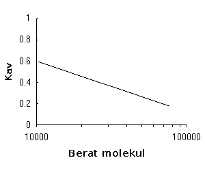

Kromatografi Filtrasi Gel
Berbagai macam molekul biologis dapat dipisahkan berdasarkan perbedaan ukuran dan bentuknya yang menyebabkan perbedaan kemampuan mereka untuk masuk ke matriks berlubang renik. Metode ini disebut juga kromatografi penyaring molekuler (molecular sieve chromatography) atau kromatografi pengeluaran molekuler (molecular exclusion chromatography). Berbagai macam matriks berlubang renik dapat dipakai, tergantung pada ciri-ciri molekul-molekul yang akan dipisahkan. Untuk pemisahan protein, biasanya matriks yang dipakai berbentuk bulatan-bulatan berlubang renik yang terbuat dari gel yang mengandung banyak air tetapi tidak bereaksi. Oleh karena itu, metode ini sering disebut filtrasi gel.
Matriks gel yang dapat dibeli termasuk Sephadex (bulatan dekstran), Sepharose dan Bio-Gel A (agarosa) dan Bio-Gel P (poliakrilamida), sedangkan bahan lain seperti berbagai macam polystyrene dan polyacryloylmorpholine pernah juga dipakai. Bulatan gel baik dekstran atau agarosa maupun poliakrilamida dapat dibuat dengan berbagai macam ukuran lubang renik sehingga kisaran berat molekul protein yang dapat dipisahkan berbeda-beda. Gel-gel dekstran dan gel-gel poliakrilamida Bio-Gel P dapat memisahkan protein berbentuk bola dengan berat molekul sebesar 800.000, sedangkan gel-gel agarosa karena lubang reniknya lebih besar, dapat memisahkan molekul dan kompleks molekuler yang mempunyai berat molekul sebesar beberapa juta. Baru-baru ini, dijual gel dekstran yang berikatan silang (Sephacryl). Bahan ini sangat kaku, stabil, dan mampu memisahkan protein berberat molekul sampai 8 juta. Kekakuan dan stabilitas gel poliakrilamida hanya dapat ditingkatkan jika matriks gel itu mengandung agarosa. Gel yang dibuat dari campuran poliakrilamida dan agarosa (Ultrogel) juga dapat dibeli. Bahan baru selalu dikembangkan. Dalam tabel berikutnya terdaftar ciri-ciri matriks yang tersedia dalam simulasi ini.
Ciri-ciri khas media filtrasi gel yang dipakai dalam simulasi ini.
|
|
Kisaran fraksinasi untuk peptida dan protein berbentuk bola (berat molekul) |
| Sephadex G-50¹ | dekstran | 1.500 - 30.000 |
| Sephadex G-100¹ | dekstran | 4.000 - 150.000 |
| Sephacryl S-200 HR¹ | dekstran/akrilamida | 5.000 - 250.000 |
| Ultrogel AcA 54² | poliakrilamida/agarosa | 6.000 - 70.000 |
| Ultrogel AcA 44² | poliakrilamida/agarosa | 12.000 - 130.000 |
| Ultrogel AcA 34² | poliakrilamida/agarosa | 20.000 - 400.000 |
| Bio-Gel P-60³ | poliakrilamida | 3.000 - 60.000 |
| Bio Gel P-150³ | poliakrilamida | 15.000 - 150.000 |
| Bio-Gel P-300³ | poliakrilamida | 60.000 - 400.000 |
¹ Sephadex® adalah merek dagang terdaftar yang dimiliki GE Healthcare Bio-Sciences AB.
² Ultrogel® adalah merek dagang terdaftar yang dimiliki BF Biotechnics, Inc.
³ Bio Gel® adalah merek dagang terdaftar yang dimiliki Bio-Rad Laboratories, Inc.
Prosedur kerja filtrasi gel biasanya sebagai berikut. Bulatan-bulatan gel tersuspensi dalam bufer tertentu dituangkan ke dalam kolom kaca atau plastik dan dibiarkan mengendap karena gaya berat. Setelah kolom dicuci dengan bufer saja, campuran protein dimasukkan ke kolom di ujung atas dan cairan yang keluar dari ujung bawah kolom (eluate) ditampung dalam tabung reaksi secara berurutan. Kemampuan protein-protein yang melewati kolom gel tersebut untuk masuk ke dalam lubang renik berbeda-beda, sehingga protein tersebut melewati kolom ini dengan kecepatan yang berbeda-beda juga. Semua protein yang berukuran lebih besar dibandingkan ukuran lubang renik terbesar sama sekali tidak dapat masuk ke dalam bulatan-bulatan gel. Protein-protein ini hanya terdapat dalam cairan antara bulatan dan keluar dari kolom sebelum protein lainnya. Protein tersebut keluar dari kolom dalam volume bufer yang disebut 'exclusion volume' (atau void volume). Semua protein yang berukuran lebih kecil dibandingkan ukuran lubang renik terkecil dapat masuk ke dalam bulatan-bulatan gel. Protein-protein ini bebas masuk-keluar dari bulatan sehingga mereka perlu waktu yang lebih lama untuk melewati kolom gel. Protein ini keluar dari kolom bersama-sama dengan molekul kecil seperti ion garam yang terdapat dalam campuran protein asli setelah semua protein lainnya terlebih dahulu keluar. Volume total kolom disebut bed volume. Protein-protein ini dicuci keluar dengan volume bufer yang hampir sebesar bed volume kolomnya (lebih kecil sedikit karena ruang kolom yang diisi dengan matriks gel sendiri). Ukuran lubang-lubang renik tidak sama persis tetapi kisarannya sempit. Protein-protein yang berukuran sekitar kisaran ukuran lubang-lubang tersebut akan dapat masuk ke sebagian lubang-lubang tetapi tidak dapat masuk ke sebagian lubang-lubang lainnya. Kemampuan protein-protein yang berukuran sekitar kisaran ukuran lubang-lubang tersebut masuk ke dalam bulatan bergantung pada ukuran dan bentuknya, sehingga mereka dicuci keluar dari kolom berurutan berdasarkan berat molekulnya, yang lebih besar keluar sebelum yang lebih kecil.
Agar pemisahan protein yang terbaik dapat diperoleh, maka jenis gel yang dipakai harus dipilih dengan baik. Pemakaian jenis gel yang kurang tepat bisa menyebabkan protein yang diteliti sama sekali tidak dapat masuk ke dalam bulatan gel sehingga dia dicuci keluar bersama beberapa protein lain dalam void volume atau sebaliknya protein yang diteliti masuk ke semua lubang-lubang dan dicuci keluar dari kolom bersama-sama dengan ion-ion garam sekitar bed volume kolomnya. Dalam kedua hal ini, pemisahan antara molekul yang berbeda kurang baik. Sebaiknya ukuran lubang-lubang dalam gel yang dipakai memungkinkan protein yang diteliti masuk ke sebagian lubang-lubang saja. Hal inilah yang menyebabkan pemisahan terbaik dari protein-protein lain. Bagi protein-protein yang dapat masuk ke sebagian lubang-lubang saja (partially excluded proteins), hubungan antara log dari berat molekul protein dan Kav adalah garis lurus, dimana:
|
|
Kav |
= |
volume elusi - void volume |
Hubungan linier antara Kav dan log dari berat molekul

Dengan demikian suatu kolom dapat dikalibrasi dengan protein-protein standar yang berat molekulnya diketahui. Volume elusinya dicatat dan informasi ini dipakai untuk membuat kurva standar. Setelah itu, jika volume elusi dari protein yang diteliti pada kolom yang sama dicatat, maka berat molekulnya dapat diperkirakan dari kurva standar itu. Namun, perlu diperhatikan bahwa bentuk molekul protein juga berpengaruh pada volume elusi-nya dari gel filtrasi. Protein dan polipeptida yang panjang dicuci keluar seolah-olah mereka berbentuk bola besar. Oleh karena itu, pemakaian kurva standar harus dengan hati-hati.
Pada pertama kali kromatografi filtrasi gel dipakai untuk pemurnian suatu protein sebaiknya campuran protein itu dipisahkan pada beberapa matriks gel dengan berbagai ukuran lubang-lubang renik. Tampung fraksi dan uji fraksi tersebut untuk kadar protein dan aktivitas enzim. Kemudian anda dapat memilih matriks yang mampu menghasilkan pemisahan yang baik antara protein yang diteliti dan protein-protein lain sambil memperoleh informasi tentang berat molekulnya. Informasi ini mungkin sangat berguna pada tahap-tahap pemurnian berikutnya.